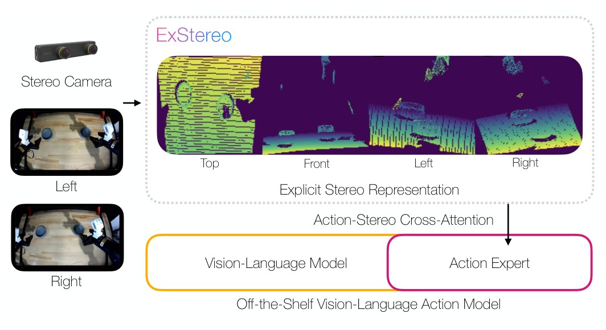
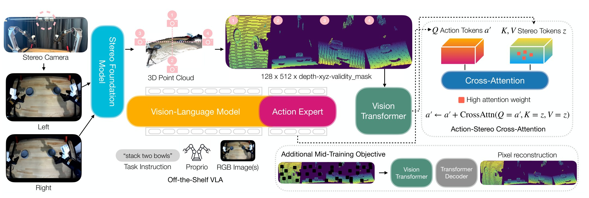
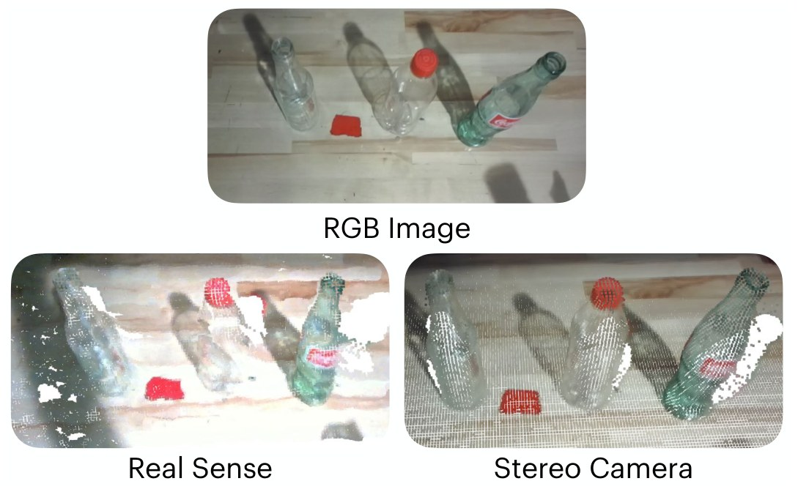
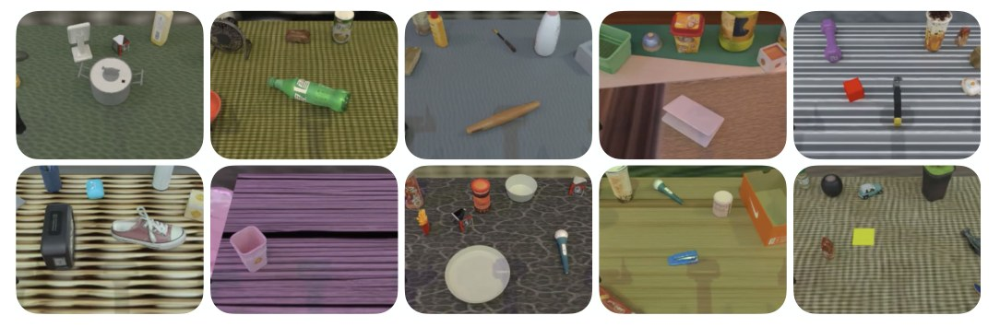

ExStereo Lifting 2D Vision-Language-Action Models to 3D with Explicit Stereo Representations
Abstract
Stereo perception for off-the-shelf VLAs
Three-dimensional perception is critical for robotic manipulation, particularly for high-precision tasks, as recovering metric depth and precise 3D object positions from monocular RGB observations is inherently ill-posed. However, many Vision-Language-Action (VLA) models rely solely on RGB observations for perception. Leveraging recent advances in foundation models for stereo matching, we introduce ExStereo, a stereo module that augments pre-trained 2D VLAs with 3D perception. ExStereo reconstructs scene geometry from stereo image pairs and renders multi-view observations as an explicit stereo representation for stereo feature extraction. The action tokens from the action expert selectively attend to the resulting stereo tokens through our proposed action-stereo cross-attention mechanism, enabling the policy to generate robot actions conditioned on 3D scene information. To learn robust 3D representations, we introduce a mid-training stage before task-specific post-training, using a self-supervised learning objective on large-scale stereo data. We validate our approach by fine-tuning two publicly available VLAs, π0.5 and SmolVLA, and evaluate them in simulation and on a real-world bimanual PiPER platform. Across both settings, VLAs fine-tuned with ExStereo consistently outperform baselines, demonstrating the effectiveness of stereo perception for robotic manipulation.

Method Overview
From a stereo pair to 3D-conditioned actions
ExStereo is a stereo module that equips pre-trained, off-the-shelf VLAs with 3D spatial perception. It takes a stereo image pair as input and employs a pre-trained stereo foundation model to obtain a disparity map. Using the camera intrinsics and stereo baseline, the disparity map is transformed into a metric depth map and 3D point cloud. The point cloud is rendered from four orthogonal viewpoints (Top, Front, Left, and Right) using z-buffering. The four views are then tiled horizontally to form a multi-view observation, which is fed into a Vision Transformer (ViT) to obtain stereo tokens. The stereo tokens are utilized for action generation through the proposed action-stereo cross-attention mechanism, where the action tokens serve as queries and the stereo tokens serve as keys and values. This allows the action tokens to selectively attend to relevant 3D visual features without modifying the large prefix token sequence or the weights of VLMs, enabling pre-trained robot policies to efficiently integrate the stereo module during post-training.

Explicit stereo representation
Stereo foundation model predicts a disparity map, which is converted to metric depth and back-projected into a point cloud. After RANSAC table leveling, it renders four 128×128 orthographic views (Top, Front, Left, Right) with depth, XYZ, and validity, tiled into a 128×512×5 observation.
Action-stereo cross-attention
A ViT with 16×16 patches turns the observation into 256 unpooled stereo tokens. A single multi-head cross-attention block lets each action token query them. Its output is added back to the action tokens as a residual, so the pre-trained VLM is untouched.
Mid-training, then post-training
During mid-training, the VLA with ExStereo train on large-scale stereo data with the standard action loss plus a masked-autoencoding (MAE) loss on the multi-view patches. During post-training, the stereo module is frozen, the MAE decoder is dropped, and the policy is fine-tuned with LoRA on a small set of task demos.

Why stereo?
Geometry where depth sensors fail
RGB-D sensors struggle with transparent and reflective objects. On these glass bottles, a RealSense point cloud (bottom left) is noisy and full of holes. A ZED Mini stereo pair processed with Fast-FoundationStereo (bottom right) recovers clean, consistent geometry, with no extra depth hardware.
Simulation
Simulation: RoboTwin bimanual tasks
We fine-tune π0.5 and SmolVLA with ExStereo and compare them with their fine-tuned base policies, with ACT (RGB), DP3 (point cloud) and StereoVLA (implicit stereo), and with ExStereo without mid-training. Each method is evaluated on 25 unseen, domain-randomized episodes, and results are averaged over three training seeds.

π0.5-ExStereo rollouts
Evaluation episodes on unseen, domain-randomized scenes. Pick a task to watch its rollouts.
Real World
Bimanual AgileX PiPER with a ZED Mini
We test on three real-world tasks: a standard bimanual task (Stack Two Bowls), a task with transparent objects (Lift Glass Bottles), and a task with an articulated object (Close Fridge Door). Each method and task gets 20 trials.